embedded in collectionBody
embedded in documentCollection
only referenced
<documentCollection>
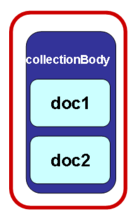
<documentCollection>

<documentCollection>

Document Class: Publications
Caveat. The definitions below are to be considered only as a general description with the sole purpose of providing an indication of the types of documents that may belong to each class and subclass.
Document Class | Publications | |||
Subclasses | Publication Description: a generic type of collection document used to present and publish standalone documents. Official Compilation Description: authoritative compilations of official documents. Collection Description: collection of individual autonomous documents. | |||
UN Document Class | AKN | AKN4UN | UN Document | AKN4UN |
documentType | subtype | sub-class | @name subclass mandatory | |
value is prescribed | value is suggested | |||
Publications | <documentCollection> | publication | publication | publication |
collection | collection | |||
<officialGazette> | publication | official compilation | officialCompilation | |
<amendmentList> | collection | amendments list | amendmentList | |
Function | Publications are standalone autonomous documents, formal authoritative compilation of official autonomous documents, collection of different autonomous documents. Function: publications of standalone autonomous documents, formal authoritative compilation of official autonomous documents and, collection of different autonomous documents. By publication we mean the documentary output of the process meant to share information in any form or medium. Structure: a collection of individual autonomous documents. | |||
Authors | UN principal and subsidiary organs, funds, programs, specialized agencies and other entities deliberative bodies. | |||
Editors | Secretariats of the assemblies, councils, conferences, boards, or other entities. | |||
The Publications Document Class is meant to cover the documentary outputs of the publishing process meant to share information in any form or medium. In AKN4UN all UN physical documents as they appear to the readers will be modelled using one of the AKN documentCollection structures in order to support the reusability of the "logical components" across the entire lifecycle of UN documents.
To accommodate all typologies of "physical documents" the Publication Document Class has been articulated in the follow subclasses:
Publication: a generic type of collection document used to present and publish standalone official documents.
Official Compilation: authoritative compilations of official documents.
Collection: collection of individual autonomous documents.
In the simplest case, an individual document, e.g. the publication of a resolution, will be modelled with an AKN <documentCollection name="publication"> meant to be used for standalone document. The "publication" will handle what we may call the "publication content" (masthead info, header, footer etc.) and will include e.g. an AKN <statement name="draftResolution"> with actual resolution.
The image below represents a publication document and its resolution and the relationship between the resolution and the publication container. The publication contains editorial information, as shown below (e.g. symbol number). Modelling the publication like this allows better reuse (i.e. the Resolution content may be used in another publication without duplication), and better management of documents – for e.g. the Resolution may be edited by a different team than the one editing the publication optimising time to delivery.
Figure: Resolution Publication containing Resolution
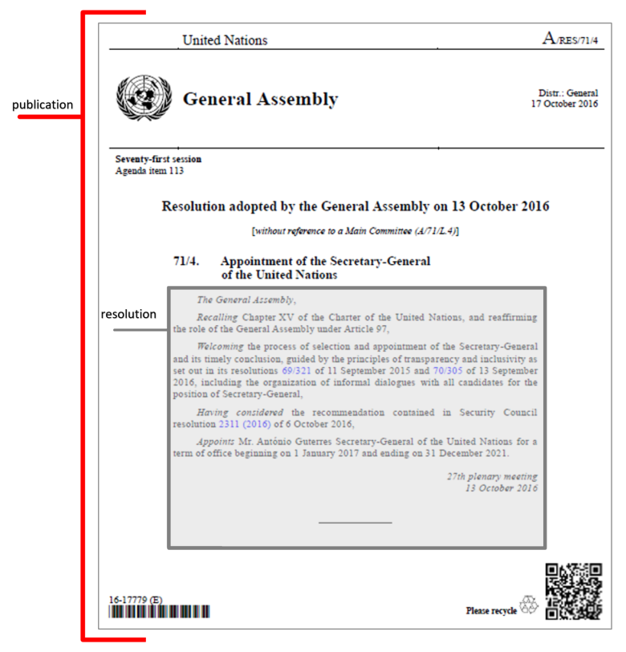
Modelling of Publications
As it is not be practical to describe all the possible types of publications of the UN System or organizations, we will focus instead on different typologies of document and their publications structure that could provide examples and a basis on how to model any type of "publication":
"Publications" are represented by a single instance using the <documentCollection> document-type.
The instance may contain the document’s cover page and title (<coverPage> and <preface> elements).
The <collectionBody> element will contain references to the included sub-documents using only the <component> element.
Nested documents are supported.
The mark-up shall follow the rules below:
Headings or titles that may preceed or follow the include components (and are not considered as part of them) will be included within a <interstitial>, <num>, or <heading> elements.
The <interstitial> element may be used also for the mark-up of text that is integral part of that instance and cannot be a separate component.
The three types of subclass of the Publication Document Class may be graphically represented in this way:
Publication Document Class | ||
It is apparent that, despite somes differences, they all share the same "pattern", one or more documents included in a publication. Akoma Ntoso supports three different ways for modelling documentCollection structures used for the Publication Document Class. The documentCollection structure allows "hosting" multiple autonomous documents of other types or even other documentCollections. Structurally, the hosted document (e.g. resolution, decision etc.) may be:
Embedded in the collectionBody: logical component(s) are included directly in the <collectionBody> element.
Embedded outside documentCollection: logical component(s) are referenced in the <collectionBody> using the element <documentRef>, while the autonomous document itself is placed outside the <collectionBody> element within the <components> block.
Only referenced: logical component(s) are referenced in the <collectionBody> using the element <documentRef> with attribute @href that specifies the IRI of the independent document/file, which exists independent of the publication document.
To a reader, the Publication will look exactly the same in all cases. The three options are equivalent for Akoma Ntoso, it will be a technical implementation decision which one may suit best a specific organization workflow of each organization.
embedded in collectionBody | embedded in documentCollection | only referenced |
<documentCollection> 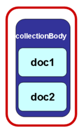 | <documentCollection>
| <documentCollection>
|
Examples
Option 1, embedded in collectionBody: the assumption here would be the logical component and the publication were drafted and edited together as one document.
Option 2, embedded in documentCollection: similar to option 1, the full content of the logical component is a logical component of the publication (rather than as part of the body of the publication).
Option 3, only referenced: it provides complete separation, by having the publication as a document, and the logical component as a document on its own. The publication only refers to the independent hosted document in the body.
Examples
The example below models the different options that we have to includ logical component in a documentCollection structure.
Document type | <akomaNtoso> <documentCollection name="{akn4un:subclass}"> | |||
Metadata | <meta> </meta> | |||
Cover | <coverPage>… </coverPage> | |||
Identification part | <preface>... </preface> | |||
Body | <collectionBody> | |||
embedded in collectionBody | embedded in documentCollection | only referenced | ||
<component eId="comp_1"> <{Logical Component}> …. <Logical Component}> </component> | <component> | <component> | ||
</collectionBody> </documentCollection> | </collectionBody> </documentCollection> | </collectionBody> </documentCollection> | ||
<components> <{Logical Component}> …. <Logical Component}> </component> | ||||
</akomaNtoso> | </akomaNtoso> | </akomaNtoso> | ||
Resolution file at href="/akn/un/statement/un/{etc.}" | ||||
<akomaNtoso> <{Logical Component}> …. <Logical Component}> </akomaNtoso> | ||||
In the case of, for example, a Resolution Publication, the three different option of embedding a resolution would look like this.
embedded in collectionBody | embedded in documentCollection | only referenced |
<collectionBody> | <collectionBody> | <collectionBody> |
<component eId="comp_1"> <statement name="resolution"> <preamble> </preamble> </component> | <component> | <component> |
</collectionBody> </documentCollection> | </collectionBody> </documentCollection> | </collectionBody> </documentCollection> |
<components> <statement name="resolution"> <preamble> </preamble> </component> | ||
| ||
</akomaNtoso> | </akomaNtoso> | </akomaNtoso> |
Resolution file at href="/akn/un/statement/un/{etc.}" | ||
<akomaNtoso> <statement name="resolution"> </akomaNtoso> | ||
NOTE: Chosing the Right Structure
It is important that you choose the right structure for the body of the publication as per your organizational requirement. There are three options described on the previous page, each of them with different implications on how you will manage and access documents now and in the future.
For instance, if your organization treats a publication and the document it contains as one entity throughout its lifecycle from creation to publication, then Options 1 and 2 may be suitable for your needs.
On the other hand, if your organization considers the publication and the document it contains as independent entities created and managed by different people or different departments, then Option 3 maybe more suitable for your needs as it allows reusability of the contained document, since containment is only via a reference.
You may also consider if the document that is included in the publication should be thought of as a kind of static reference, e.g. Safety Standard as it was in the year 2000, or if the reference should be considered dynamic, the point in time relevant version (point in time determined based on the date context of when the document is requested for viewing or editing) of the Safety Standard. In that case only option 3 would work.
There is no fix rule here, and a lot also depends how much ownership you have over the document that is included, if it belong to a different entity it may be safer to use option 1 or 2. The choice of when to statically or dynamically include a document will have to be made keeping in mind current uses and also possible future uses of a document, as well as present and future availability of the included document.
NOTE: the XML examples provided in the next sections should not be considered complete. Examples show only the essential structural elements of the mark-up and only the ones relevant in a specific context without any semantic or presentation markup in order to keep the XML "humanly’" readable.
Publication Document Class Structure
Description
The structure of a publication may have the following elements:
Cover Masthead (en-tête) with publication data | Not always present |
Identification part Title, authority, identification numbers, preface content, etc. | Always present. |
Body This is the part that contained the logical document that is published. | Always present. |
Annexes Annexes / Attachments that supplement the content of the document. | Not always present. |
Modelling
This section presents the most important Akoma Ntoso elements and attributes necessary to model the general structure of a resolution.
document type | <akomaNtoso> |
<documentCollection contains="originalVersion" name="{AKN4UN:subclass}"> or <officialGazette contains="originalVersion" name="officialCompilation"> | |
metadata | <meta> |
identification part | <preface> (...) </preface> |
operative block | <collectionBody> (...) </collectionBody> |
annexes | <attachments> (...) </attachments> |
</documentCollection> or </officialGazette> <components>(…)</components> | |
</akomaNtoso> |
Examples: Standalone Publication (<publication>)
In the following example, only for practical reasons of presentation, a "resolution" is embedded in the <collectionBody> of the publication documentCollection. As stated above the actual modality of the "inclusion" of the Resolution is left up to the decision of the mark-up editor. Here the concern is only the "publication document". The resolution document, the part in grey below, is covered in the modelling of Resolution Document Class section.
document type | <akomaNtoso> <documentCollection name="publicationResolution"> | |
cover | <coverPage> ……… </coverPage> | 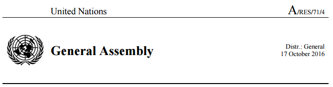 |
identification part | <preface> ……… </preface> | 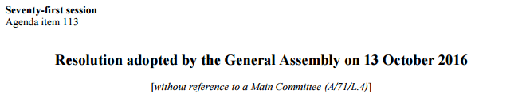 |
body | <collectionBody> | |
logical | <component eId="comp_1"> | |
resolution | <statement contains="originalVersion" name="resolution"> | |
</statement> | ||
</component> | ||
</collectionBody> </documentCollection> </akomaNtoso> | ||
Cover
The cover page (masthead) block <cover> </cover> content varies depending on the stage in the lifecycle of the hosted document and on the traditions of the different organizations.
Publications may bear a "masthead" (en-tête) that may include some or all the following information:
cover page
publication symbol
organization name
organization logo
name of the issuing body
distribution category
confidentiality
status of the document
date of publication
language of the original document
language of document
Modelling <coverPage>
For information about element specific usage, see 1.1.1 <coverPage>.
Examples
This section presents some examples of the application in practice of the previous elements and attributes.
text | 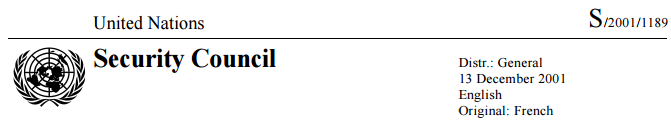 |
modelling | <coverPage> <role refersTo="#issuingAuthority" class="header"> |
Identification part
The identification part <preface> </preface> is meant to include any matter found from the very beginning of a document up to where the <collectionBody> begins. It may contain information related to the title of the document, proponent authority, identification numbers, date of approval, and the like.
All resolutions start with some or all the information listed below, not necessarily in the same order:
document type
document authority
proponent (name of the committee/commission, could be more than one)
session
meeting
agenda item name/number (could be more than one – usually not present in approved resolutions)
title of publication (usually preceded or followed by the resolution’s identifier)
identifier
date of publication
date of adoption
reference to "preceding/causing documents"
proponent
type of adoption
Modelling <preface>
For information about element specific usage, see 1.1.2 <preface>.
Examples
The following examples show some practical cases.
text | |
modelling | <preface> |
Please note that the "A/71/L.4" above in this context is not marked up as <docNumber>, since it is not the number of publication. It has be marked up correctly as a "reference", as in the examples above. | |
Body
The main content <collectionBody> </collectionBody> is meant to include any matter found after the <preface> up to where the <conclusion> or <attachments> or the end of the document. It contains the main content of the publication document that being a collection structure reports or include other autonomous documents.
Modelling <collectionBody>
The <collectionBody> element is used for compilations of documents that maintain their autonomy, that have their own identity, lifecycle, workflow, and other metadata, and may be managed as a unique container for other documents, possibly interspersed with interstitial elements with content that does not form an individual document.
More specifically <collectionBody> is used to model:
Official compilations of documents, e.g. Official Records.
List of amendments, collected and submitted to the official deliberative body for discussion.
Collection of documents for all the documents that may be considered as "folders" of other sub-documents, i.e. it may be used to make arbitrary compilations and collections of documents.
AKN4UN | AKN | body element | Supported elements |
Publications | <officialGazette> <amendmentList> <documentCollection> | <collectionBody> | Element type: collectionBodyType <component> |
The <collectionBody> element is a container of a list of other documents included or referred by the element <component>. Before, after or in between <component>, the element <interstitial> is used as a container of text elements and blocks that are placed for any reason between individual documents in a collection of documents.
A detailed explanation regarding the different options for modelling collection documents was given in "Modelling of Publications" section above.
Examples
The following examples illustrate some practical cases.
text85 | |
modelling | Option 1 : embedded in collectionBody <documentCollection> <cover> </cover> <preface> </preface> <collectionBody> <component> </collectionBody> </documentCollection> <components> <preamble> </preamble> OR AS Option 2 --- <documentCollection> <cover> </cover> <preface> </preface> <collectionBody> <component> </collectionBody> </documentCollection> |
note | In Option 1, the resolution is modelled in the <components> block of the main Akoma-Ntoso document. In Option 2, the resolution is modeled as an independent AKN document which is only referenced in the publication document.In both cases the resolution is a clearly a recognizable Work. |
NOTE: Including parts of a document
In the above example, take note of the IRI part of the <documentRef> that we used:
<documentRef href="/akn/un/debateReport/agenda/un-ga/2016-10-01/A-RES-71-4"
showAs="71/4. Appointment of the Secretary-General of the United Nations"/>
This is Work level IRI:
"/akn/un/debateReport/agenda/un-ga/2016-10-01/A-RES-71-4"
It will include the whole Resolution 71/4 into the "publication". So if the Resolution had other logical components and Annexes, they would all be included in the "publication".
If we had stated instead:
"/akn/un/debateReport/agenda/un-ga/2016-10-01/A-RES-71-4/!main"
the "!main" added at the end signifies ONLY the main part of the Resolution document should be included into the publication. Any other logical components, attachments, annexes that a resolution may have would not be included.
If you wanted instead to include only e.g. annex 1 of a resolution, you should use the following IRI.
"/akn/un/debateReport/agenda/un-ga/2016-10-01/A-RES-71-4/!main/annex_1"
For more information on AKN4UN Naming Convention see XXXXX.
Headers and Footers
Headers and Footers are clearly print-oriented aspects of a document and tend to follow organization-specific rules and traditions in the way they are structured and used. For this reason, there is no element provided in Akoma-Ntoso to create headers and footers, and is left up to the individual implementations as to how they represent it in XML. In the examples below we have attempted to model header and footer rules and structures using proprietary elements of our own creation set in the akn4un: prefixed namespace.
All these elements should be placed in the <presentation> block in the <meta> section. A point of note here is the use of proprietary elements.
Examples
Headers and Footers | |
note | The header and footer are described via specific container elements for each situation <akn4un:firstPageHeader>, <akn4un:firstPageFooter>, <akn4un:oddPageHeader>, <akn4un:oddPageFooter>, <akn4un:evenPageHeader>, <akn4un:evenPageFooter>. Each of these describes rules for the context, as the name of the element suggests. These elements are in a custom namespace: akn4un, which has the namespace url set to http://a4u.un.org for the purposes of this document. The header and footer elements have been further subdivided into the left hand side and the right hand side of the page via container elements called <akn4un:left> and <akn4un:right>. There are other custom elements used within these custom containers which have been described in the following pages. |
elements | <presentation>{include all the presentation elements}</presentation> e.g. <presentation source="#author" xmlns:a4u="http://a4u.un.org"> |
note | In the images below, we have indicated the first page header part in blue in an example resolution (A/RES/71/186). Typically, the first page header and footer are different from the other pages. Additionally, odd and even number pages may show different header and footer characteristics. |
First page header | 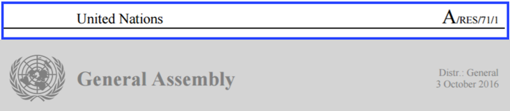 |
elements | <akn4un:firstPageHeader> |
examples | <akn4un:firstPageHeader> |
Even page header | 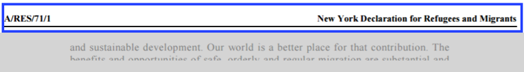 |
elements | <akn4un:evenPageHeader> |
examples | <akn4un:evenPageHeader> |
Odd page header | 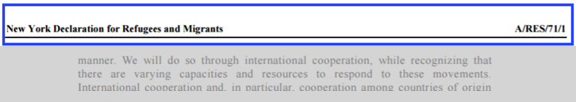 |
elements | <akn4un:oddPageHeader> |
examples | <akn4un:oddPageHeader> |
First page footer | 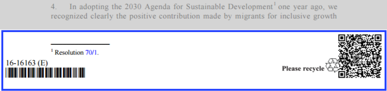 |
elements | <akn4un:firstPageFooter> |
examples | <akn4un:firstPageFooter> |
Even page footer | 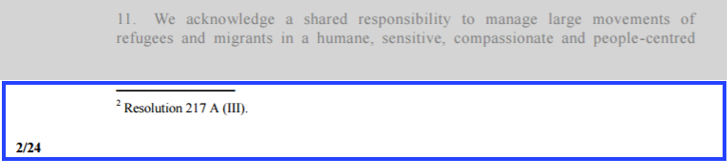 |
elements | <akn4un:evenPageFooter> |
examples | <akn4un:evenPageFooter> |
Odd page footer | 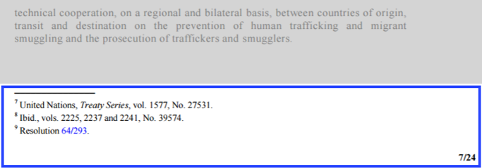 |
elements | <akn4un:oddPageFooter> |
examples | <akn4un:oddPageFooter> |
Footnote | |
elements | <akn4un:footnote> |
examples | <akn4un:footnote> |
note | This is a proprietary element. Footnotes are added to the document during rendering of the print document, for e.g. during an XSL-FO transformation. The <akn4un:footnote> element is a placeholder which may be used by the document processor to place the footnote at runtime. The <akn4un:line> is just an instruction to the processor to draw a line and the <akn4un:footnoteText> is a placeholder to render the actual footnotes content. |
Publication Job number | 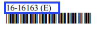 |
element | <docketNumber>{document number}</docketNumber> |
examples | <docketNumber refersTo="#publicationJobNumber"> 16-16163 (E)</docketNumber> |
note | This is an AKN element, not a proprietary namespace element. @refersTo specifies the type of internal number that is represented by this element. In the example, this element is used within akn4un:firstPageFooter/akn4un:left; it appears only on the first page. |
Image | 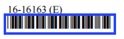 |
element | <img (source of the image}> |
examples | <img alt="bar code" class="barCode" src="/resolution_16-16163_E_barCode.jpg"/> |
note | This is an AKN element, not a proprietary namespace element. @alt is fundamental for the WAI guidelines87 of accessibility in web pages. The text above the bard-code is not part of the image, it is the "publication job number". In the example, this element is used within akn4un:firstPageFooter/akn4un:left ; it appears only on the first page. |
Alternative file name | 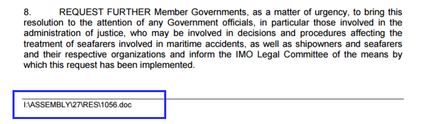 |
element | <a href="{uri}" > |
examples88 | I:\ASSEMBLY\27\RES\1056.doc <a href="I:\ASSEMBLY\27\RES\1056.doc" refersTo="#physicalName">I:\ASSEMBLY\24\RES\981.doc</a> |
note | This is a case from an IMO resolution A 27/Res.1056, where there is a physical path referenced to word document. |
Examples
Below are some practical examples of the Akoma Ntoso mark-up of the main blocks of the minutes / summary record.
document type | <akomaNtoso> <debateReport name="meetingMinutes"> | ||
identification part89 | <preface> ……… </preface> | ||
main content | < mainBody> | ||
Closing block |
| ||
</ mainBody> | |||
</debateReport> </akomaNtoso> | |||
Identification part: <preface>
The identification part <preface> </preface> is meant to include any matter found from the very beginning of a document up to where the <mainBody> begins. Typically it contains information related to the title of the document, identification numbers, date of the meeting, etc. It may include long titles, tables of contents, and the like.
Meeting Reports / Minutes may have some or all the info below, not necessarily in the order below:
session
title
meeting (name/number/date/time/place)
reporting body (plenary / committee / commission)
presiding officers
document type
Modelling <preface>
For information about element specific usage, see 1.2 <preface>.
Examples
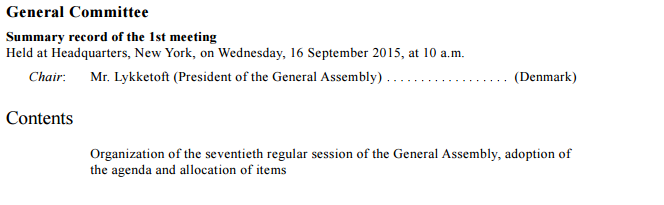 | |
modelling | <preface> |
modelling | <preface> |
Main content: <mainBody>
The main content <mainBody> </mainBody> is meant to include any matter found after the <preface> up to where the <conclusion>, or <attachments>, or the end of the document. The structure of the minutes follows the order of the agenda, and the different agenda items and sub-items (and/or reference to related documents) are the headings used to subdivide the minutes. Headings may have some form of identification, number or letter.
When the agenda item has been discussed previously and resumed in the meeting, it is noted with the phrase "(continued)" following the agenda title.
Adoption of documents and the results of votes are reflected, e.g. The draft resolution A/C.4/70/L.5 was adopted by 148 votes to 7 and 9 abstentions, or if no vote was taken: The draft resolution A/C.8/70/L.7 was adopted.
Reference to other documents, e.g. draft resolutions, may also be present.
Paragraphs may be numbered with Arabic numerals and at times displayed in two columns.
The speeches may have the following information:
title
last name
member state of the speaker
organization on behalf of which the speaker talks, if any
role
summary narration in third person
<mainBody>
The <mainBody> element may contain all types of AKN groups of elements. In the conctext of Document Class Meeting Reports, only hierarchical and block containers elements are allowed. See the table below:
AKN4UN | AKN | body element | Supported elements |
Meeting Reports | <debateReport> | <mainBody> | Element group: hierElements alinea, article, book, chapter, clause, division, hcontainer, indent, level, list, paragraph, part, point, proviso, rule, section, subchapter, subclause, subdivision, sublist, subparagraph, subpart, subrule, subsection, subtitle, title, tome, transitional |
Element group: blockElements block, blockContainer, blockList, foreign, ol, p, table, tblock, toc, ul | |||
Element group: containerElements address, adjournment, administrationOfOath, communication, container, debateSection, declarationOfVote, div, ministerialStatements, nationalInterest, noticesOfMotion, oralStatements, papers, personalStatements, petitions, pointOfOrder, prayers, proceduralMotions, questions, resolutions, rollCall, writtenStatements |
For the content model used by hierarchical and block containers, please see relevant sections.
Examples
This section presents some examples of the application in practice of the previous elements and attributes.
modelling | <debateBody> |
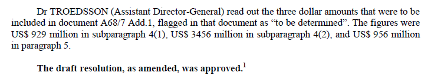 | |
modelling | <debateBody> <narrative refersTo="#approvalDraftResolution"> The draft resolution, as amended, was <vote refersTo="#approved" </narrative> </debateBody> |
modelling | <debateBody> |
modelling | <debateBody> |
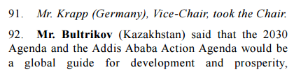 | |
modelling | <debateBody> <person refersTo="#krapp" as="#chair">Mr. Krapp</person> ( <organization refersTo="#memberGermany">Germany</organization>), <role refersTo="#viceChair">Vice-Chair</role>, took the <role refersTo="#chair">Chair</role>. |
Closing formula
The closing formula is usually just an editorial note, such as: "The meeting rose at {time}". in these types of documents, it is part of the main body. It should be modelled using the generic element <debateSection>, because there is no distinct conclusion or closing formula. The <debateSection> should be qualified with @name attribute (e.g.<debateSection name="conclusion">) and the actual formatly wrap by the <adjournment> element with time marked-up using the <recordedTime> element.
Examples
This section presents some examples of the application in practice of the previous elements and attributes.
source97 | 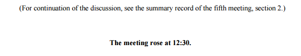 |
modelling | <mainBody> (omissis...) <adjournment eId="adjournment_1"> </adjournment> |
Annexes/Attachments
The annexes block <attachments> </attachments> is meant to include all annexes/attachments of lists of members, delegates, representatives, observers, and the like.
Modelling <attachments>
For information about element specific usage, see section 1.1.7 <attachments>.
Examples
source98 | 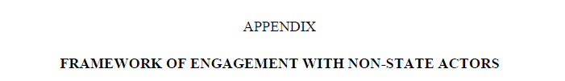 |
modelling | <attachments> <attachment> <meta>…</meta> </attachments> </attachments> |
88 http://www.imo.org/en/KnowledgeCentre/IndexofIMOResolutions/Documents/A%20-%20Assembly/1056(27).pdf
89 See WHA68/2015/REC/3, http://apps.who.int/gb/or/e/e_wha68r3.html , http://apps.who.int/gb/ebwha/pdf_files/WHA68-REC3/A68_2015_REC3-en.pdf#page=27 (pdf page 27)
97 http://apps.who.int/gb/ebwha/pdf_files/WHA68-REC3/A68_2015_REC3-en.pdf , page 33 (pdf page 57)